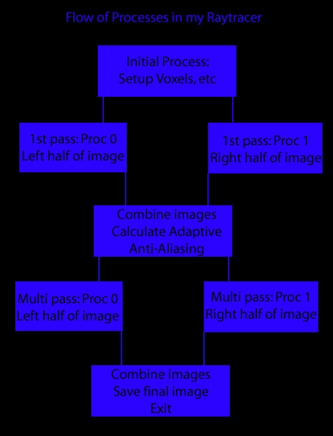
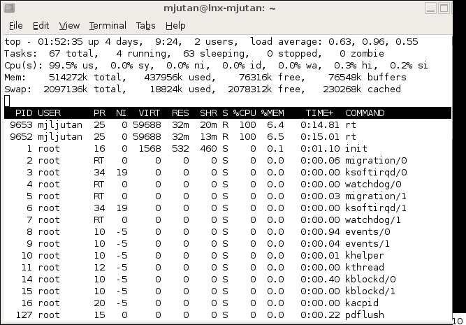

Objective 2:
Multi-processing and Analysis
 Flow of processes in my Raytracer
 Example of 2 processes running at the same time on a Multithreaded machine
Results As expected, 2 processes ran the most efficiently on the Hyperthreaded machine. Here are the results of testing a 2000-poly Venus De Milo mesh on gl22.student.cs.
|
Written by: Mike Jutan
CS 488 - Computer Graphics
University of Waterloo